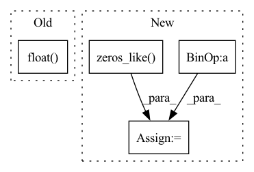

Pattern ID :35255

Before Change
self.roi = RoIPool( (self.roi_size, self.roi_size),self.spatial_scale)
def forward(self, x, rois, roi_indices):
roi_indices = torch.Tensor(roi_indices).float()
rois = torch.Tensor(rois).float()
if x.is_cuda:
roi_indices = roi_indices.cuda()
After Change
roi_indices = roi_indices.cuda()
rois = rois.cuda()
rois_feature_map = torch.zeros_like(rois)
rois_feature_map[:, [0,2]] = rois[:, [0,2]] / img_size[1] * x.size()[3]
rois_feature_map[:, [1,3]] = rois[:, [1,3]] / img_size[0] * x.size()[2]
indices_and_rois = torch.cat([roi_indices[:, None], rois_feature_map], dim=1)
//-----------------------------------//
// 利用建议框对公用特征层进行截取
//-----------------------------------//
pool = self.roi(x, indices_and_rois)
//-----------------------------------//
// 利用classifier网络进行特征提取
//-----------------------------------//
fc7 = self.classifier(pool)
// 当输入为一张图片的时候，这里获得的f7的shape为[300, 2048]
fc7 = fc7.view(fc7.size(0), -1)
roi_cls_locs = self.cls_loc(fc7)
roi_scores = self.score(fc7)
roi_cls_locs = roi_cls_locs.view(n, -1, roi_cls_locs.size(1))
roi_scores = roi_scores.view(n, -1, roi_scores.size(1))
return roi_cls_locs, roi_scores
In pattern: SUPERPATTERN
Frequency: 3
Non-data size: 4
Instances
Fragment ID: 100304634
Project Name: bubbliiiing/faster-rcnn-pytorch
Commit Name: d456f02a402fd8cf8db1d991aa612439b3c0ffb2
Time: 2021-01-30
Author: 47347516+bubbliiiing@users.noreply.github.com
File Name: nets/classifier.py
M Class Name: Resnet50RoIHead
N Class Name: Resnet50RoIHead
M Method Name: forward(5)
N Method Name: forward(4)
M Parent Class: nn.Module
N Parent Class: nn.Module
M File Name: nets/classifier.py
N File Name: nets/classifier.py
M Start Line: 68
M End Line: 77
N Start Line: 82
N End Line: 107
'>
Before Change
self.roi = RoIPool( (self.roi_size, self.roi_size),self.spatial_scale)
def forward(self, x, rois, roi_indices):
roi_indices = torch.Tensor(roi_indices).float()
rois = torch.Tensor(rois).float()
if x.is_cuda:
roi_indices = roi_indices.cuda()
After Change
roi_indices = roi_indices.cuda()
rois = rois.cuda()
rois_feature_map = torch.zeros_like(rois)
rois_feature_map[:, [0,2]] = rois[:, [0,2]] / img_size[1] * x.size()[3]
rois_feature_map[:, [1,3]] = rois[:, [1,3]] / img_size[0] * x.size()[2]
indices_and_rois = torch.cat([roi_indices[:, None], rois_feature_map], dim=1)
//-----------------------------------//
// 利用建议框对公用特征层进行截取
//-----------------------------------//
pool = self.roi(x, indices_and_rois)
//-----------------------------------//
// 利用classifier网络进行特征提取
//-----------------------------------//
pool = pool.view(pool.size(0), -1)
// 当输入为一张图片的时候，这里获得的f7的shape为[300, 4096]
fc7 = self.classifier(pool)
roi_cls_locs = self.cls_loc(fc7)
roi_scores = self.score(fc7)
roi_cls_locs = roi_cls_locs.view(n, -1, roi_cls_locs.size(1))
roi_scores = roi_scores.view(n, -1, roi_scores.size(1))
return roi_cls_locs, roi_scores
'>
Fragment ID: 100304635
Project Name: bubbliiiing/faster-rcnn-pytorch
Commit Name: d456f02a402fd8cf8db1d991aa612439b3c0ffb2
Time: 2021-01-30
Author: 47347516+bubbliiiing@users.noreply.github.com
File Name: nets/classifier.py
M Class Name: VGG16RoIHead
N Class Name: VGG16RoIHead
M Method Name: forward(5)
N Method Name: forward(4)
M Parent Class: nn.Module
N Parent Class: nn.Module
M File Name: nets/classifier.py
N File Name: nets/classifier.py
M Start Line: 31
M End Line: 39
N Start Line: 33
N End Line: 59
'>
Before Change
threshold_low = float(clean_entropy[int(0.05 * len(clean_entropy))])
threshold_high = float(clean_entropy[int(0.95 * len(clean_entropy))])
print(f"Threshold: ({threshold_low:5.3f}, {threshold_high:5.3f})")
percent = float(((poison_entropy < threshold_low) +
(poison_entropy > threshold_high)).sum().float() / len(poison_entropy))
print("Classification Acc: ", percent)
def check(self, _input) -> torch.Tensor:
After Change
threshold_high = float(clean_entropy[int(0.95 * len(clean_entropy))])
y_true = torch.cat((torch.zeros_like(clean_entropy), torch.ones_like(poison_entropy)))
entropy = torch.cat((clean_entropy, poison_entropy))
y_pred = torch.where(((entropy < threshold_low).int() + (entropy > threshold_high).int()).bool(),
torch.ones_like(entropy), torch.zeros_like(entropy))
print(f"Threshold: ({threshold_low:5.3f}, {threshold_high:5.3f})")
print("f1_score:", metrics.f1_score(y_true, y_pred, average="weighted"))
print("precision_score:", metrics.precision_score(y_true, y_pred, average="weighted"))
'>
Fragment ID: 100304629
Project Name: ain-soph/trojanzoo
Commit Name: b252ab7e9a5f58cee299ad63b05fca46835a6b65
Time: 2020-09-13
Author: ain-soph@live.com
File Name: trojanzoo/defense/backdoor/strip.py
M Class Name: STRIP
N Class Name: STRIP
M Method Name: detect(1)
N Method Name: detect(1)
M Parent Class: Defense_Backdoor
N Parent Class: Defense_Backdoor
M File Name: trojanzoo/defense/backdoor/strip.py
N File Name: trojanzoo/defense/backdoor/strip.py
M Start Line: 35
M End Line: 43
N Start Line: 35
N End Line: 49